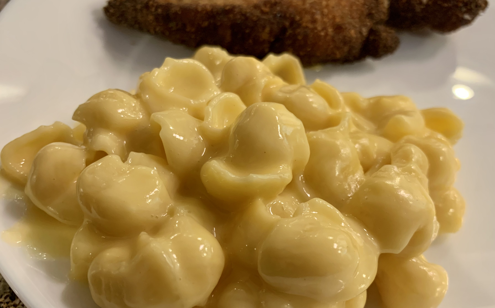

Mac and Chees

This recipe is so simple to make! It can be a side dish with meatloaf and stewed tomatoes or hold it's own.
Enough to make 4 side dishes or 2 main dishes.
INGREDIENTS
- 8 ounces elbow macaroni
- 2 tablespoons butter
- ¼ cup all-purpose flour
- 2 cups milk
STEPS
- Step 1: In a large pot with boiling salted water
cook elbow macaroni until al dente. Drain.
- Step 2: In a medium saucepan, over medium heat melt butter or margarine.
Whisk flour and stir vigorously.
- Step 3: In a large bowl mix together the drained pasta and cheese sauce mixture.
Toss to coat evenly.
- Step 4: Pour into a greased 2 quart casserole dish.
Bake in a preheated 350 degree F (175 degrees C) oven for 30 minutes.
Let stand 10 minutes before serving.